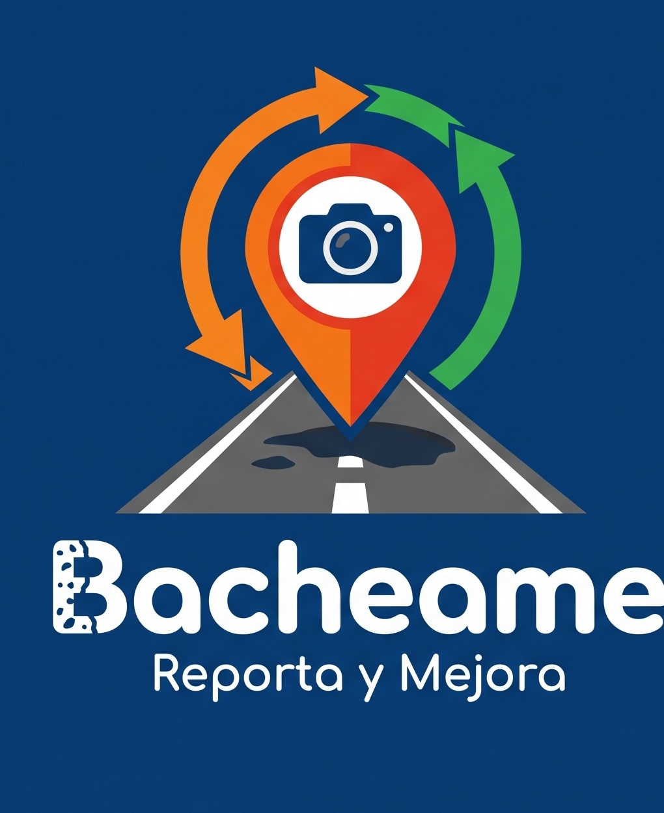

Para la ciudadanía
Reportar, seguir y contribuir
- Mapa y reporte móvil sencillo.
- Estados públicos y trazabilidad.
- Puntos, niveles y ranking de Atrapabaches por reparaciones verificadas.
- Protección de identidad, rostros y matrículas.
Proyecto impulsado a través de Mi Paraguay
Reportes ciudadanos para decisiones viales más precisas
Una aplicación paraguaya para teléfonos Android que permitirá fotografiar un bache desde un lugar seguro, registrar su ubicación exacta, dar seguimiento al caso y sumar puntos cuando la contribución produzca una reparación verificada.

La propuesta
Bacheame organizará reportes por calle, barrio y municipio, agrupará posibles duplicados y mostrará dónde se concentran los daños. La municipalidad conservará la decisión técnica sobre si corresponde bacheado, recapado, reparación de base o un nuevo asfaltado.
Cómo funciona
El ciudadano registra el bache sin utilizar el teléfono mientras conduce.
La aplicación guarda coordenadas, calle, barrio, municipio y fecha.
Bacheame revisa la evidencia y agrupa reportes del mismo problema.
La comuna recibe información organizada para realizar su evaluación.
El caso muestra si fue evaluado, programado o intervenido.
Una fotografía posterior confirma la reparación, habilita puntos y suma impacto al ranking de Atrapabaches.
Para la ciudadanía
Para los municipios
Primera fase
El piloto previsto tendrá una duración inicial de 90 días. Permitirá validar la calidad de los reportes, el proceso de derivación, la respuesta municipal y la capacidad de verificar las reparaciones.
Sostenibilidad
Bacheame busca cubrir su desarrollo y operación mediante una empresa co-inversora o patrocinadora fundadora. El objetivo no es maximizar utilidades, sino mantener la plataforma activa, segura y capaz de mejorar con el tiempo.
El patrocinio no permite priorizar u ocultar reportes, ni concede acceso a datos personales de los usuarios.